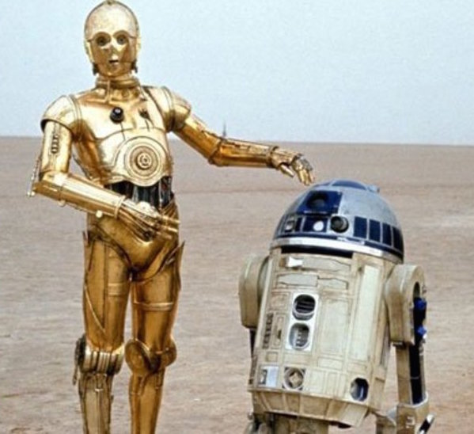
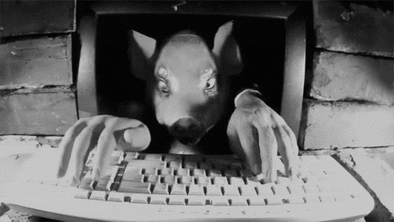
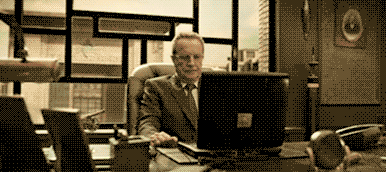

This user does either not exist, has not enough information or is a private account
Drama Queen

You are very active on Twitter but overuse exclamation marks and capital letters. Try to write more text: there are too many hashtags and mentions in your tweets. Don't be such a drama queen!
Bot
Behavior your not human. too periodic your timeline is. be proactive: when want publish not wait to mentioned be. Control-C tweeting the same s**t.
Stalker
You spend way too much time referring to the same person. Twitter has so much more to offer! Get out into the real world and stop stalking or we'll call 911.
Spammer
Enough is enough. This is not the browser toolbar: your tweets include too many links and the same words continuously. Check the dictionary from time to time to enrich your vocabulary. Nobody likes a spammer!
Hater
Take a chill pill! Stop having a destructive behaviour: your tweets are full of complaints and demeaning vocabulary. Take a look around Twitter and you'll see life is way better than what you comment it to be!